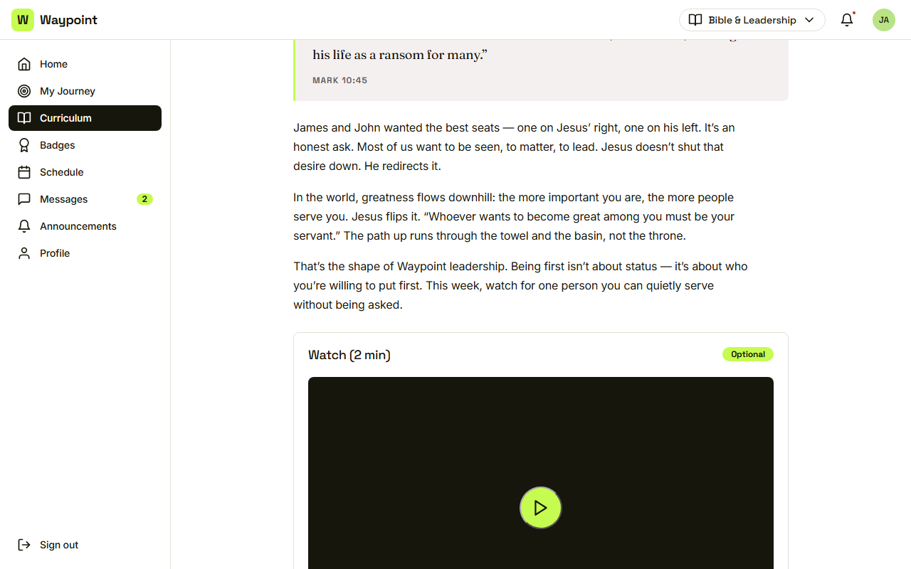
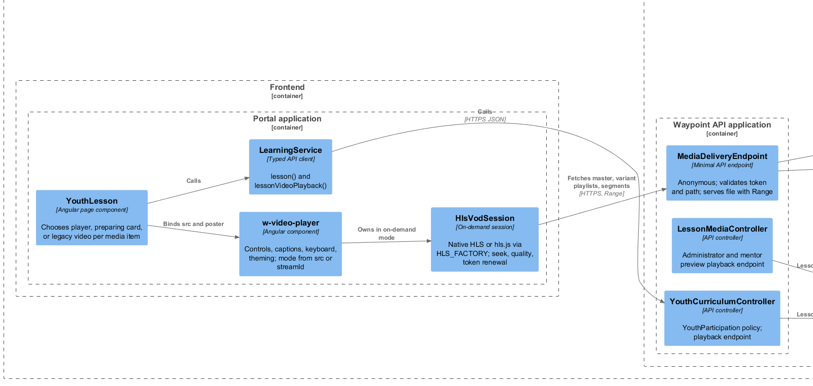
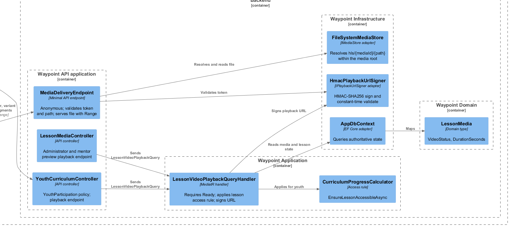
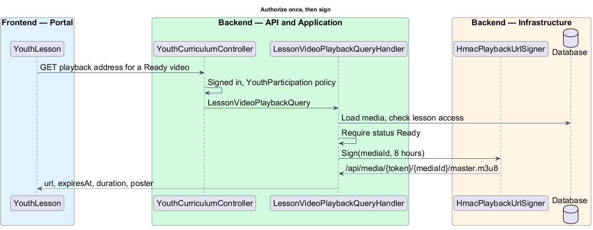
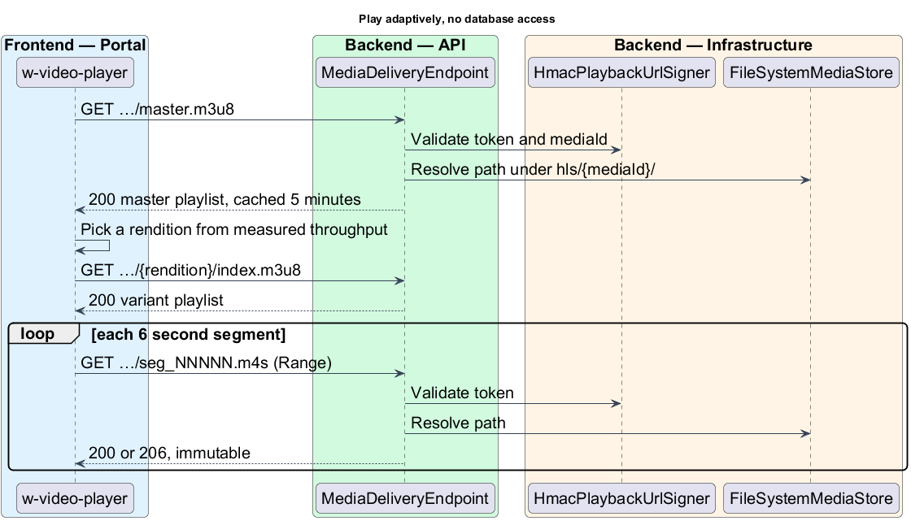
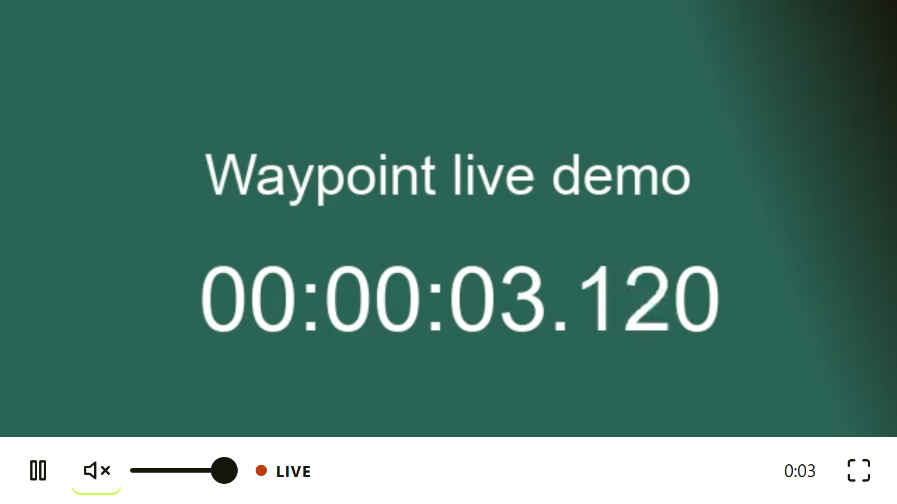
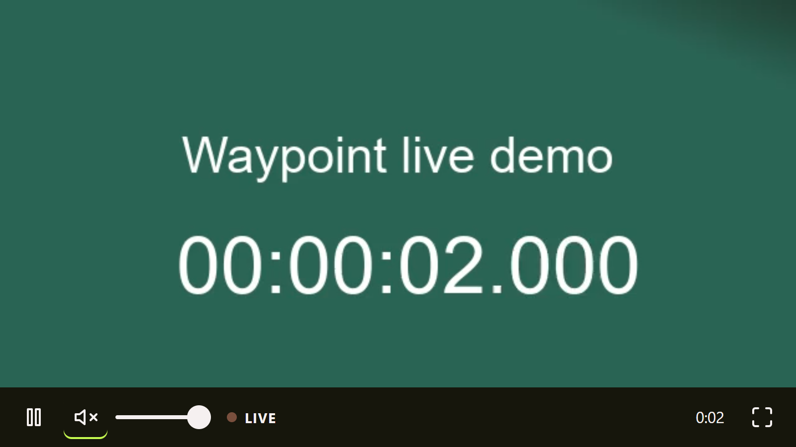
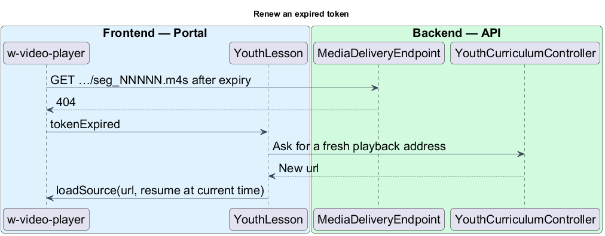
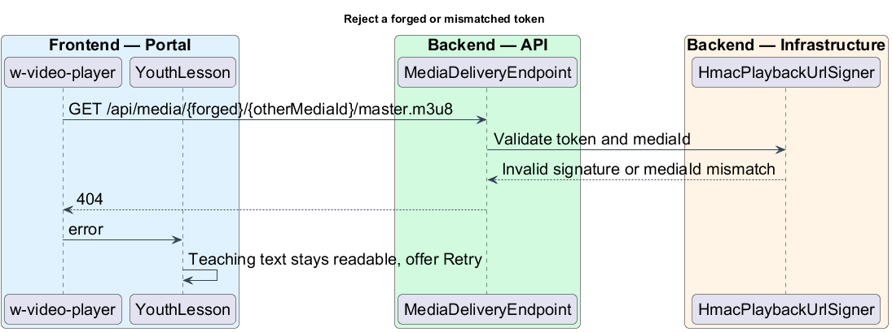

Waypoint · Video 116
Streaming a lesson video
Fast to start, adaptive, seekable, and only for the right youth
A video tag cannot send the access token

The Watch card in the lesson mock
In the browser: page, player, session

Design diagram: frontend components
On the server: handler, signer, endpoint

Design diagram: backend components
Authorize once, then sign

Design diagram: authorize and sign
Relative addresses inherit the token
/api/media/{token}/{mediaId}/master.m3u8
/api/media/{token}/{mediaId}/{rendition}/index.m3u8
/api/media/{token}/{mediaId}/{rendition}/seg_NNNNN.m4s
No redirects: the base address must not change
Validate, resolve, send from disk

Design diagram: play adaptively, no database access
Cache rules
Playlists · private, 5 minutes
Segments, init, poster · immutable, one year
Any rejection · plain 404
Shared controls (live player captures)

Light

Dark
On demand mode adds a seek bar, elapsed and total time, and a quality label
Renew without losing position

Design diagram: renew an expired token
Forged or mismatched tokens

Design diagram: reject an invalid request
Things to remember
- Authorize once, then serve without the database
- Put the token in the path
- Playlists are short lived, segments are immutable
- The player adapts, seeks anywhere, and renews